リンクの作成と編集
リンク作成
方法１
ノードを作成後、ツールバーからリンクの追加ボタン(矢印なし、一方向矢印、双方向矢印のいずれか)を選択し、ネットワークビュー上で関連付けたいノード間にドローツールの要領で線を引くことでリンクが張られます。
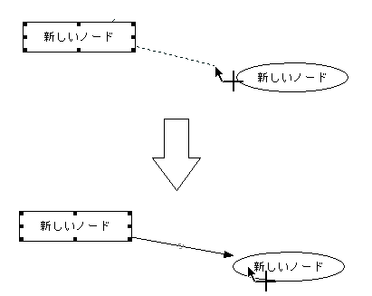
方法２
アウトラインビューの右クリックメニューで、「別のノードへのリンク」を選択するとマウスカーソルの形状が変化します。
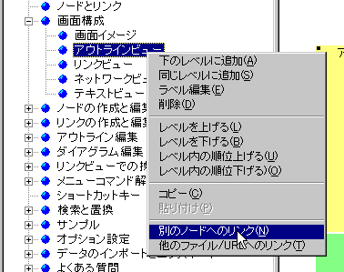
この状態でアウトラインビューの他のノードをクリックするとリンク設定ダイアログが起動しリンクを張れます。この方法で階層の異なるノード間のリンクを設定することが出来ます。
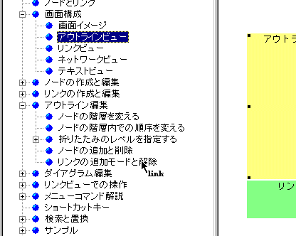
※ ちなみに、ネットワークビューで「すべての階層のノードを表示」というモードにすれば階層の異なるノード間のリンクを方法１で作成することも可能です。
リンク編集
リンクを編集するには、ネットワークビュー上でリンクをダブルクリックするか、リンクを選択してコンテキストメニューから「リンクのプロパティ」を選ぶことでダイアログが起動し、プロパティを編集できます。線種や色、スタイルをコンテキストメニューから個別に設定することも可能です。書式設定ツールバーを利用して設定することもできます。
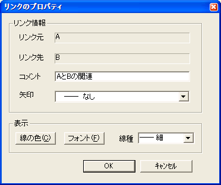
リンクにはコメントを付けることができ、コメントはネットワークビューでノード間の関連名として表示されます
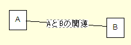
ネットワークビューで、リンク線の真中をドラッグ＆ドロップすることでリンクを曲げることができます。リンクコメントはリンクの曲点で表示されます。リンクコメントがない場合、曲点は小さな矩形のアンカーとして表示されていますので、このアンカーをドラッグ＆ドロップすることで曲げ具合を調整することができます。
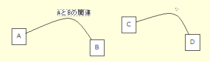
リンクの張替え
リンクの張替え機能は、既存のリンクの別のノードに接続しなおす機能です。リンクを消して新しいリンクを追加する方法では、リンク属性を再設定する必要があるため、こちらの方法をお勧めします。
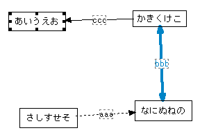 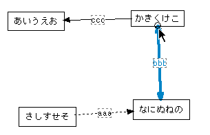 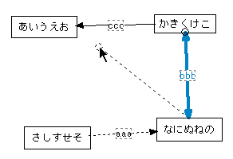 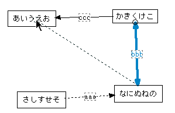 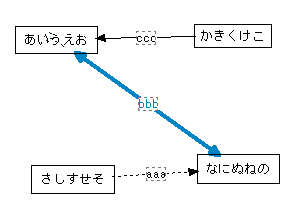
リンク方向の反転
リンクの方向の反転とは、リンク元のノードとリンク先のノードを入れ替える機能です。
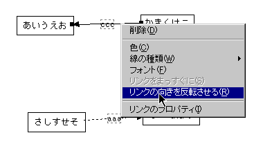

コンテキストメニューによるリンクの矢印設定
リンク設定ダイアログを開かなくても、右クリックでリックを選択すると、メニューから矢印の種類を設定できます。
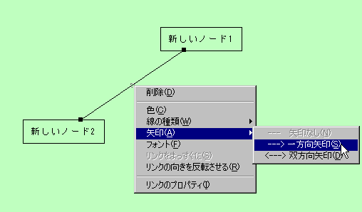
リンク削除
ネットワークビューでリンクを削除するには、リンクを選択してDELキーを押すかコンテキストメニューから「削除」を選びます。また、リンクが付いているノードを消すことでもリンクは削除されます。
リンクはリンクビューから削除することも可能です。
複数リンクの一括削除
複数のリンクを一括削除するには、ネットワークビューで削除したいリンクを囲むようにノードを複数選択します。この状態でコンテキストメニューから「削除:選択範囲のリンク」を選ぶことで、選択範囲のリンクのみをすべて削除することができます。
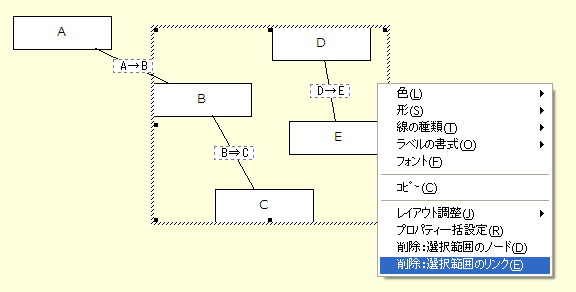 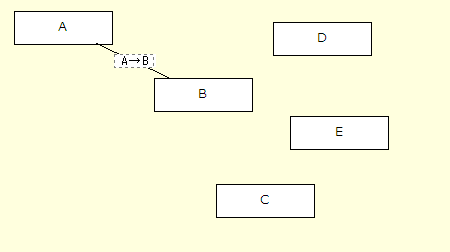
リンク設定
リンクの線種や矢印の付き方などのプロパティをデフォルトで指定したい場合は、メニューから「ツール」⇒「オプション」⇒「リンク」タブで指定することが可能です。
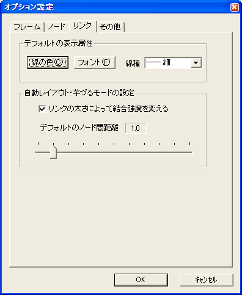
リンクの結合強度を変えることで自動レイアウト、芋づるモード、MindMap的キーバインドでのノード間の距離を変えることができます。